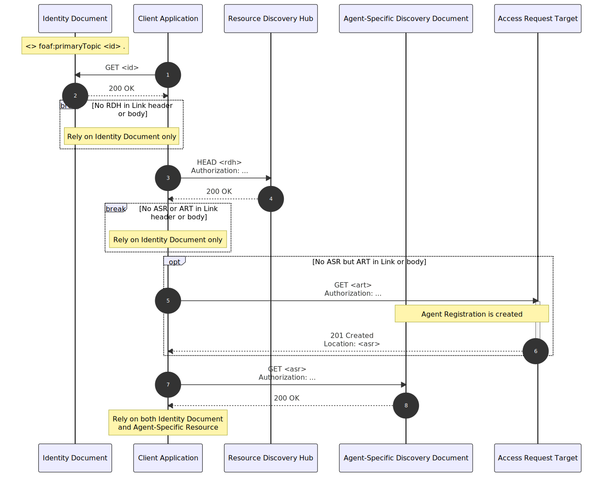

1. Terminology
This document relies heavily on parts of the architecture proposed in Solid Application Interoperability. It borrows some definitions from RDF 1.1 and concepts from Concepts in Web Representation. [WEBID] and [DID] as used as examples. For conformance, terms from HTTP semantics and Web-Linking are used. References to all these are linked throughout the text, and in Terms defined by reference. Furthermore, this document uses the terms Agent, Server and Client in the following sense.
- Agent
-
An Entity that acts, either on its own or via some other Agent. This corresponds to the notion of Agents as defined in Solid Application Interoperability.
- Server
-
An Agent capable of receiving requests, and serving responses to those requests.
- Client
-
An Agent interacting with a Server, by sending requests and receiving responses.
2. Introduction
When an Agent wishes to discover Information about an Entity (e.g. a person, document or API), and the possible ways to interact with that Entity, the Agent typically starts its inquiry at one or more *initial Source of Information*, such as the Identity Document corresponding to one of the Entity’s Identifier (e.g. the Profile Document of a WebID or DID Document of a Decentralized Identifier). In the Representations of these initial Source, other Resources might be referenced, which in turn might be further Source of Information.
An Entity exposing Resources to Agents might want to restrict the access to certain Resources to certain Agents or groups of Agents. We use access here in a broad sense, indicating the usefulness or lack thereof of a Resource to an Agent. Such access restrictions might be necessary because of privacy or security concerns, or to provide Information specific to those Agents: tailored indexes, user preferences, application state ... in other words, the Agent-Specific Resources: Resources related to an Entity an Agent wishes to interact with, which are accessible by and possibly relevant for that Agent. This leads to the following question: how can an Agent discover these Agent-Specific Resources between all other Resources related to an Entity, in a performant, secure, and privacy-minded manner?
NOTE: The concept of an Agent-Specific Resource is based on an abstraction of the Agent Registration of Solid Application Interoperability, in its role as provider of agent-specific information. They divide Agents into Social Agents and Applications: Social Agents manage the other [Agents] they interact with by registering these Agents in their Agent Registry. A Social Agent Registration provides the Social Agent with a place to track and manage other Social Agents they interact with. An Application Registration provides the Social Agent with a place to maintain metadata, state, preferences, and other application-specific data associated with a given Application they have elected to use.
Given a complete set of Resources discoverable by an Agent with respect to a certain Entity, let be the partition of into the set of Agent-Specific Resources and the set of other Resources. Lacking any further information, the performance of will correlate with . While this might work for toy examples and proofs of concept, it is not scalable: for increasing , would spend ever more time in a trial-and-error search for its Agent-Specific Resources.
Note: This is the approach taken in the Solid WebID Profile and Type Indexes specifications.
This document specifies a way to discover an Agent’s Agent-Specific Resources relating to an Entity without having to try all discoverable Resources related to that Entity, using a single Source of Information that can provide the Agent with only the limited set of Agent-Specific Resources, based on the Identity of the Agent.
3. Resource Discovery Hub
As explained in [#sec-intro], Agents cannot simply rely on trial-and-error to discover their Agent-Specific Resources related to an Entity, since this results in an unscalable performance. Instead, an Entity could expose a single Source of Information, at which each Agent can identify itself in return for its Agent-Specific Resources (if it has any). Let’s call this Resource the Resource Discovery Hub: a Server Resource, linked to an Entity, that provides Client Agents interacting with that Entity quick access to their Agent-Specific Resources.
NOTE: The concept of a Resource Discovery Hub is based on an abstraction of the Authorization Agent of Solid Application Interoperability, in its role as mechanism for Agent Registration Discovery: An Agent that needs to discover whether a target Social Agent has a corresponding Agent Registration for them can query the Authorization Agent for that target Social Agent.
3.1. Considerations
This section is non-normative.
Some considerations can be made when conceptualizing the Resource Discovery Hub, and its relation to other Resources and inquiring Clients.
-
In order to use a Resource Discovery Hub to discover the Agent-Specific Resources related to an Entity, the Client should be able to discover the Resource Discovery Hub starting from a Dereferenceable Identifier of that Entity.
-
It should be possible, but not necessary, to integrate the Resource Discovery Hub into other services, such as the Dereferenceable Identifier provider. This would, for example, allow for optimization of the § 5 Agent-Specific Resource Discovery.
-
The response provided by the Resource Discovery Hub should be applicable to all document types the other service might respond with.
-
The response provided by a Resource Discovery Hub should be minimal, as not to cause too much bloat in case the purpose of a request was purely the response provided by the other service.
-
Agent-Specific Resources might not always be related to the Entity in the same way that the response of the other service is. The Client should therefore always be capable of distinguishing the different parts of the combined response.
-
While a read operation on the combined service might combine the info of both services (in a distinguishable way), the presence of the Resource Discovery Hub should not disturb the other operations on the other service (e.g. write operations).
-
-
Since Agent-Specific Resources will in many cases remain the same for long periods of time, Agent-Specific Resources presented by the Resource Discovery Hub should be cacheable by the Client.
Based on these considerations, the following sections will specify § 4 Discovery of the Resource Discovery Hub and § 5 Agent-Specific Resource Discovery.
4. Discovery of the Resource Discovery Hub
NOTE: This section takes inspiration from the Authorization Agent Discovery of Solid Application Interoperability.
Clients wishing to discover the Resource Discovery Hub for a given Entity SHOULD dereference an Identifier <id> of that Entity.
If the response contains an HTTP Link header with relation type rel="TBD", the Client SHOULD take the link target of the header to be the IRI of the Resource Discovery Hub of the Entity.
If no such header is present, and the response contains an RDF Document, the Client MAY parse it. If the document contains a statement of the form <id> <TBD> <rdh>, the Client SHOULD take the object value <rdh> to be the IRI of the Resource Discovery Hub of the Entity.
Example `GET` request to an Entity Identifier, and two possible responses: one with Link header, and one without.
GET <id> HTTP / 1.1
HTTP / 1.1 200 OK Link : <rdh>; rel="TBD"
HTTP / 1.1 200 OK <id> <TBD> <rdh> .
Each Entity SHOULD only have a single Resource Discovery Hub related to it. The IRI of that Resource Discovery Hub MUST be unique to that Entity. In scenarios where a Resource Discovery Hub services Clients for multiple Entities, this may be facilitated through a unique sub-domain or path.
In case a Client has found no Resource Discovery Hub in the response header or body after dereferencing an Entity’s Identifier to the Entity’s Identity Document, the requesting Client SHOULD take there to be no Resource Discovery Hub for that Entity, and the Client SHOULD take the Identity Document to contain the only Information immediately available.
5. Agent-Specific Resource Discovery
NOTE: This section takes inspiration from the Agent Registration Discovery of Solid Application Interoperability.
Once the Resource Discovery Hub related to an Entity is known, a Client wishing to discover its Agent-Specific Resources related to that Entity SHOULD query the Resource Discovery Hub by sending a `HEAD` or `GET` request to the Resource Discovery Hub’s IRI, in which the value of the `Authorization` header is set to a TBD Token containing the Identifier of the Client.
oauth access token, oidc id token, or more general (e.g. HttpSig, VC in body...) ?
need for Entity’s ID as well ?
Upon receiving a request, the Resource Discovery Hub MUST check the validity of the TBD Token. If the TBD Token is valid, the Resource Discovery Hub MUST send a response including, for each Agent-Specific Resource <asr> of the requesting Client, an `Link` header with <asr> as target value and the relation rel="TBD" relating it to either the Entity or to the Client with the `anchor` attribute; or, in case no Agent-Specific Resource was found for the requesting Client, no `Link` headers of that type.
HTTP / 1.1 200 OK Link : <asr>; rel="TBD"; anchor="id"
In case the Client receives a response from the Resource Discovery Hub with no relevant HTTP Link header, the requesting Client SHOULD take the Identity Document of the Entity to contain the only Information immediately available.
To reduce header bloat, a Resource Discovery Hub SHOULD only advertise a single Agent-Specific Resource to the requesting Client. In scenarios where a Resource Discovery Hub has multiple Agent-Specific Resources for the requesting Client, the Resource Discovery Hub SHOULD provide an Agent-Specific Discovery Document: a single Agent-Specific Resource encoding an RDF Graph relating the Entity or the Client to each of the other Agent-Specific Resources. This Agent-Specific Discovery Document is then the only Agent-Specific Resource linked to in the response header of the Resource Discovery Hub.
6. Agent Registration
As pointed out in § 4 Discovery of the Resource Discovery Hub and § 5 Agent-Specific Resource Discovery, if a Client has found no Resource Discovery Hub in the response header or body after dereferencing an Entity’s Identifier to the Entity’s Identity Document, or if a Client did find an Resource Discovery Hub but receives a response from this Resource Discovery Hub with no HTTP Link header of the type rel="TBD", then that Client should take the Identity Document of the Entity to contain the only Information immediately available.
Both the Client and the Entity might, however, want to transition from such a situation to one in which the Client does receive links to Agent-Specific Resources from an Resource Discovery Hub of the Entity: the Entity might want to set up an Resource Discovery Hub to begin with; it might register the Client at the Resource Discovery Hub, adding one or more Agent-Specific Resources for it; the Client might possibly register itself, e.g. to keep some state; or the Client might request, from the Entity or the Resource Discovery Hub, to be registered.
One can imagine any number of mechanisms that implement these flows, and this document will not specify how to do so. To follow up on the situation above, however, it will suggest an extendable framework for Agent Registration Requests: a one-step notification a Client Agent can perform in reaction to the absence of Agent-Specific Resources when an Resource Discovery Hub is already available. In this context, we call the Agent-Specific Discovery Document resulting from the Agent Registration Request an Agent Registration.
Note: This is in line with the use of the term Agent Registration in Solid Application Interoperability.
If a Resource Discovery Hub receives a request from a Client for which it has no Agent-Specific Resources, but to which it wants to provide the opportunity to request an Agent Registration, the Resource Discovery Hub MAY respond with a `Link` header to a third Resource, in which case the relation type of the header MUST hold the semantics that indicate how to perform an Agent Registration Request at the target of the `Link`, e.g. as specified in an extension to this document.
HTTP / 1.1 200 OK Location : new-ar Link : <target>; rel="TBD"; anchor="id"
As a basic method of performing Agent Registration Request, this document provides the relation type rel="TBD". Upon receiving a response from the Resource Discovery Hub containing a `Link` header of this type, a Client MAY perform a HTTP `POST` request to the [target] IRI, in which the value of the `Authorization` header is set to a TBD Token containing the Identifier of the Client.
POST <target> HTTP / 1.1 Authorization : TBD ...
HTTP / 1.1 201 CREATED Location : new-ar
The effect of such a valid request to the target MUST be that an Agent Registration is created for the requesting Client at the Resource Discovery Hub of the Entity; the response on such requests SHOULD be a [:201 Created:], with the IRI of the newly created Agent Registration in the `Location` header.
oauth access token, oidc id token, or more general (e.g. HttpSig, VC in body...) ?
Appendix A: Summary Sequence Diagram
